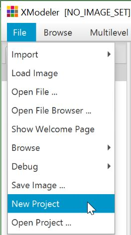
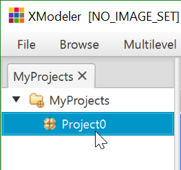
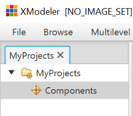

Boot up XMF-Mosaic.
The first step in creating a model is to create a project.
From the file menu, select New Project.

Alternatively, the same operation can be called by right clicking on the User project in the browser.
A new empty project with a default name appears in the MyProrjects project tree.

We want the name of the project to reflect what it contains, so the project name is selected and changed to “Components”.

By default, a project contains a package - this is where the model will reside.
The package can be viewed by expanding the (Component) project icon by clicking on the cross. By default it has the same name as the project.
